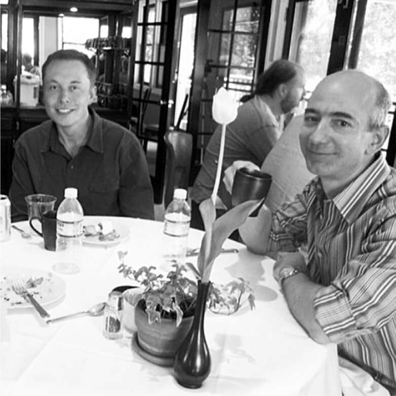

Jeff Bezos
Jeff Bezos, tỷ phú Amazon đầy năng lượng với tiếng cười sảng khoái và sự nhiệt tình trẻ trung, theo đuổi đam mê của mình với tài năng vừa nhiệt huyết vừa có phương pháp. Giống như Musk, ông là một người nghiện tiểu thuyết khoa học viễn tưởng từ nhỏ, đọc ngấu nghiến những cuốn sách của Isaac Asimov và Robert Heinlein tại thư viện địa phương.
Năm 5 tuổi, vào tháng 7 năm 1969, ông đã xem truyền hình đưa tin về sứ mệnh Apollo 11, đỉnh điểm là Neil Armstrong đặt chân lên mặt trăng. Ông gọi đó là “một khoảnh khắc trọng đại” đối với mình. Sau này, ông đã tài trợ cho một loạt các nhiệm vụ trục vớt động cơ tên lửa Apollo 11 từ Đại Tây Dương, thứ mà ông đặt trong một hốc tường cạnh phòng khách của ngôi nhà ở Washington, DC.
Niềm hứng khởi về không gian đã biến ông thành một trong những người hâm mộ cuồng nhiệt của Star Trek, thuộc lòng từng tập phim. Là thủ khoa của lớp trung học, bài phát biểu của ông nói về cách định cư trên các hành tinh, xây dựng khách sạn không gian và cứu hành tinh của chúng ta bằng cách tìm kiếm những nơi khác để sản xuất. “Vũ trụ bao la, điểm đến cuối cùng, hẹn gặp lại ở đó!” ông kết luận.
Năm 2000, sau khi đưa Amazon trở thành nhà bán lẻ trực tuyến thống trị thế giới, Bezos lặng lẽ thành lập một công ty có tên là Blue Origin, được đặt theo tên hành tinh xanh nhạt, nơi loài người bắt nguồn. Giống như Musk, ông tập trung vào ý tưởng chế tạo tên lửa tái sử dụng. “Tình hình năm 2000 khác gì so với năm 1960?” ông hỏi. “Sự khác biệt nằm ở cảm biến máy tính, camera, phần mềm. Việc có thể hạ cánh thẳng đứng là loại vấn đề có thể được giải quyết bằng những công nghệ không tồn tại vào năm 1960.”
Cũng như Musk, ông bắt tay vào các nỗ lực không gian với tư cách là một người truyền giáo hơn là một lính đánh thuê. Có nhiều cách dễ dàng hơn để kiếm tiền. Ông cảm thấy nền văn minh nhân loại sẽ sớm làm cạn kiệt tài nguyên của hành tinh nhỏ bé của chúng ta. Điều đó sẽ đặt chúng ta trước một lựa chọn: chấp nhận tăng trưởng trì trệ hoặc mở rộng đến những nơi ngoài Trái đất. “Tôi không nghĩ rằng sự trì trệ phù hợp với tự do,” ông nói. “Chúng ta có thể giải quyết vấn đề đó chỉ bằng một cách: di chuyển ra ngoài hệ mặt trời.”
Họ gặp nhau năm 2004 khi Bezos nhận lời mời của Musk tham quan SpaceX. Sau đó, ông ngạc nhiên khi nhận được email khá cộc lốc từ Musk bày tỏ sự khó chịu vì Bezos chưa đáp lễ bằng cách mời ông đến Seattle xem nhà máy của Blue Origin, nên Bezos đã nhanh chóng làm điều đó. Musk bay đến cùng Justine, tham quan Blue Origin, rồi họ ăn tối cùng Bezos và vợ MacKenzie. Musk đưa ra rất nhiều lời khuyên với phong thái nhiệt tình thường thấy. Ông cảnh báo Bezos rằng ông đang đi sai hướng với một ý tưởng: "Này, chúng tôi đã thử điều đó và nó hóa ra rất ngớ ngẩn, vì vậy tôi khuyên anh đừng làm điều ngốc nghếch mà chúng tôi đã làm." Bezos nhớ lại cảm giác rằng Musk hơi quá tự tin, vì lúc đó ông vẫn chưa phóng thành công tên lửa nào. Năm sau, Musk đề nghị Bezos cho Amazon đánh giá cuốn sách mới của Justine, một tiểu thuyết kinh dị đô thị về sự lai tạo giữa người và quỷ. Bezos giải thích rằng ông không can thiệp vào việc Amazon đánh giá sách gì, nhưng nói rằng cá nhân ông sẽ đăng một bài đánh giá của khách hàng. Musk gửi lại một câu trả lời cộc lốc, nhưng Bezos vẫn đăng một bài đánh giá cá nhân tích cực.
Bắt đầu từ năm 2011, SpaceX đã giành được một loạt hợp đồng từ NASA để phát triển tên lửa có thể đưa con người lên Trạm Vũ trụ Quốc tế, một nhiệm vụ trở nên quan trọng sau khi tàu con thoi ngừng hoạt động. Để hoàn thành nhiệm vụ đó, SpaceX cần mở rộng cơ sở vật chất tại Bệ phóng 40 của Cape Canaveral, và Musk nhắm đến việc thuê cơ sở phóng nổi tiếng nhất ở đó, Bệ phóng 39A.
Bệ phóng 39A từng là trung tâm của giấc mơ chinh phục không gian của Mỹ, in sâu vào ký ức của cả một thế đại xem truyền hình, những người đã nín thở khi nghe thấy đếm ngược "Mười, chín, tám..." Nhiệm vụ lên mặt trăng của Neil Armstrong mà Bezos xem khi còn nhỏ đã được phóng từ Bệ phóng 39A vào năm 1969, cũng như nhiệm vụ lên mặt trăng có người lái cuối cùng vào năm 1972. Nhiệm vụ tàu con thoi đầu tiên vào năm 1981 và nhiệm vụ cuối cùng vào năm 2011 cũng được phóng từ đây.
Nhưng đến năm 2013, với chương trình tàu con thoi bị đình chỉ và nửa thế kỷ khát vọng không gian của Mỹ kết thúc trong sự tiếc nuối, Bệ phóng 39A đang bị rỉ sét và dây leo mọc um tùm. NASA rất muốn cho thuê nó. Khách hàng tiềm năng rõ ràng là Musk, người có tên lửa Falcon 9 đã phóng các nhiệm vụ chở hàng từ Bệ phóng 40 gần đó, nơi Obama đã đến thăm. Nhưng khi hợp đồng thuê được đưa ra đấu thầu, Jeff Bezos - vì cả lý do tình cảm và thực tế - đã quyết định cạnh tranh.
Khi NASA cuối cùng trao hợp đồng thuê cho SpaceX, Bezos đã kiện. Musk rất tức giận, tuyên bố rằng thật nực cười khi Blue Origin tranh chấp hợp đồng thuê "khi họ thậm chí chưa đưa nổi một que tăm lên quỹ đạo." Ông chế giễu tên lửa của Bezos, chỉ ra rằng chúng chỉ có khả năng bay lên rìa không gian rồi rơi xuống; chúng thiếu lực đẩy lớn hơn nhiều cần thiết để thoát khỏi trọng lực Trái đất và đi vào quỹ đạo. "Nếu trong vòng năm năm tới, họ bằng cách nào đó xuất hiện với một phương tiện đạt tiêu chuẩn đánh giá con người của NASA, có thể kết nối với Trạm Vũ trụ, đó là mục đích của Bệ phóng 39A, chúng tôi sẽ sẵn lòng đáp ứng nhu cầu của họ," Musk nói. "Thẳng thắn mà nói, tôi nghĩ chúng ta có nhiều khả năng phát hiện ra kỳ lân nhảy múa trong ống dẫn lửa hơn."
Cuộc chiến của các ông trùm khoa học viễn tưởng đã bắt đầu. Một nhân viên SpaceX đã mua hàng tá kỳ lân đồ chơi bơm hơi và chụp ảnh chúng trong ống dẫn lửa của bệ phóng.
Cuối cùng, Bezos đã thuê được một khu phức hợp phóng gần đó tại Cape Canaveral, Bệ phóng 36, nơi từng là điểm xuất phát của các sứ mệnh lên Sao Hỏa và Sao Kim. Cuộc cạnh tranh giữa hai tỷ phú trẻ tuổi này lại tiếp tục. Việc chuyển giao các bệ phóng linh thiêng này, cả về mặt biểu tượng lẫn thực tế, thể hiện ngọn đuốc khám phá không gian của John F. Kennedy được truyền từ chính phủ sang khu vực tư nhân—từ NASA, một cơ quan từng huy hoàng nhưng nay đã trì trệ, sang một thế hệ tiên phong mới, đầy nhiệt huyết với sứ mệnh của mình.
Cả Musk và Bezos đều có tầm nhìn về điều gì sẽ giúp du hành vũ trụ trở nên khả thi: tên lửa tái sử dụng. Bezos tập trung vào việc tạo ra các cảm biến và phần mềm để dẫn đường cho tên lửa hạ cánh nhẹ nhàng xuống Trái Đất. Nhưng đó chỉ là một phần của thử thách. Khó khăn lớn hơn là tích hợp tất cả những tính năng đó trên một tên lửa vẫn đủ nhẹ, và động cơ có đủ lực đẩy để đưa nó vào quỹ đạo. Musk bị ám ảnh bởi bài toán vật lý này. Anh thường nói đùa nửa thật nửa đùa rằng chúng ta, những người Trái Đất, đang sống trong một trò chơi mô phỏng được tạo ra bởi những kẻ thống trị thông minh với khiếu hài hước. Họ đã làm cho trọng lực trên Sao Hỏa và Mặt Trăng đủ yếu để việc phóng vào quỹ đạo trở nên dễ dàng. Nhưng trên Trái Đất, trọng lực dường như được hiệu chỉnh một cách trớ trêu để việc đạt tới quỹ đạo chỉ vừa đủ khả thi.
Giống như một người leo núi tỉ mỉ kiểm tra từng món đồ trong ba lô của mình, Musk bị ám ảnh bởi việc giảm trọng lượng của tên lửa. Điều này có tác động nhân lên: loại bỏ một chút trọng lượng—bằng cách xóa bỏ một bộ phận, sử dụng vật liệu nhẹ hơn, hàn đơn giản hơn—dẫn đến việc cần ít nhiên liệu hơn, từ đó giảm khối lượng mà động cơ phải nâng. Khi đi qua các dây chuyền lắp ráp của SpaceX, Musk thường dừng lại ở mỗi trạm, nhìn chằm chằm trong im lặng, và thách thức nhóm xóa hoặc cắt giảm một số bộ phận. Trong hầu hết mọi cuộc gặp gỡ, anh đều điên cuồng truyền tải thông điệp: "Một tên lửa hoàn toàn tái sử dụng là ranh giới giữa một nền văn minh đơn hành tinh và một nền văn minh đa hành tinh."
Musk đã mang thông điệp này đến bữa tối thường niên năm 2014 của Câu lạc bộ Thám hiểm trăm năm tuổi ở thành phố New York, nơi anh được trao Giải thưởng của Chủ tịch. Anh chia sẻ sân khấu với Bezos, người nhận giải thưởng cho công việc của nhóm mình trong việc phục hồi động cơ của tàu vũ trụ Apollo 11 của Neil Armstrong. Bữa tối có các món ăn được thiết kế để thu hút những người ưa mạo hiểm, chẳng hạn như bọ cạp, dâu tây phủ giòi, dương vật bò chua ngọt, martini nhãn cầu dê và cá sấu nguyên con được xẻ thịt ngay tại bàn.
Musk được giới thiệu bằng một video cho thấy các vụ phóng tên lửa thành công của anh. "Các bạn thật tốt bụng khi không chiếu ba lần phóng đầu tiên của chúng tôi," anh nói. "Chúng ta sẽ phải có một cuộn phim lỗi nào đó vào một lúc nào đó." Sau đó, anh giảng bài về sự cần thiết của một tên lửa hoàn toàn tái sử dụng. "Đó là thứ sẽ cho phép chúng ta thiết lập sự sống trên Sao Hỏa," anh nói. "Vụ phóng sắp tới của chúng tôi sẽ lần đầu tiên có chân hạ cánh trên tên lửa." Tên lửa tái sử dụng một ngày nào đó có thể giảm chi phí đưa một người lên Sao Hỏa xuống còn 500.000 đô la. Hầu hết mọi người sẽ không thực hiện chuyến đi này, anh thừa nhận, "nhưng tôi nghi ngờ có những người trong căn phòng này sẽ làm như vậy."
Bezos thì hoan nghênh, nhưng thực chất ông đang âm thầm chuẩn bị một đòn tấn công bất ngờ. Ông và Blue Origin đã nộp đơn xin cấp bằng sáng chế Hoa Kỳ với tiêu đề "Hạ cánh tàu vũ trụ trên biển", và vài tuần sau bữa tối, bằng sáng chế đã được cấp. Đơn đăng ký dài mười trang mô tả "phương pháp hạ cánh và thu hồi tầng đẩy và/ hoặc các phần khác của nó trên một bệ nổi trên biển". Musk rất tức giận. Ý tưởng hạ cánh trên tàu biển "là điều đã được thảo luận suốt nửa thế kỷ nay", ông nói. "Nó xuất hiện trong phim viễn tưởng; nó có trong nhiều đề xuất; có quá nhiều tiền lệ, thật điên rồ. Vì vậy, việc cố gắng đăng ký bằng sáng chế cho thứ mà mọi người đã thảo luận suốt nửa thế kỷ rõ ràng là lố bịch."
Năm sau, sau khi SpaceX kiện, Bezos đã đồng ý hủy bỏ bằng sáng chế. Nhưng tranh chấp này đã làm gia tăng sự cạnh tranh giữa hai doanh nhân tên lửa.

Bữa tối năm 2004